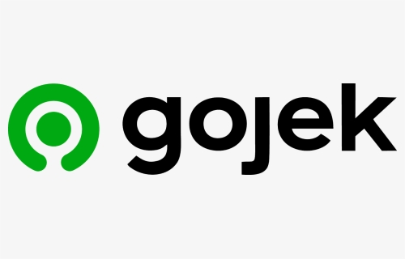

Website Gojek
Clone tampilan aplikasi Gojek berbasis web.
Saya adalah Rasya islami fasya, mahasiswa Teknik Informatika Universitas Jabal Ghafur yang fokus pada web development, UI/UX, dan solusi digital kreatif.
Saya adalah mahasiswa Teknik Informatika semester akhir dengan passion di bidang pengembangan web dan desain UI/UX. Saya aktif mengikuti kompetisi, membuat project, dan terus mengembangkan kemampuan melalui pengalaman praktis dan kolaborasi.
Ketua Divisi IT — BEM Fakultas Teknik (2022–2023)
Mengelola tim teknologi untuk mendukung kegiatan kampus, sistem pendaftaran, dan event internal.
Frontend Developer Intern — PT Digitaloka Nusantara (2023)
Membangun antarmuka web responsif dan integrasi desain dengan fitur interaktif.
Asisten Praktikum Pemrograman Web (2022–kini)
Membimbing mahasiswa dalam pengembangan web dan praktik teknis pemrograman.
Juara 2 Hackathon Nasional — TechFest Riau (2023)
Merancang solusi inovatif berbasis aplikasi untuk tantangan kompetisi teknologi.